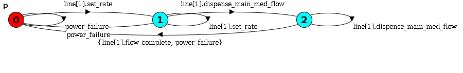

<2024-06-25 মঙ্গল>
We consider the three examples available with the paper. And we will evaluate whether it is feasible to express real systems formally using UML diagram.
It does not express UML to Formal Specification Process Algebra (FSP) that our LTSA analyzer uses. Rather it converts a subset of UML syntax into formalism of object-oriented action systems(OOAS). And it does not automatically convert UML to LTS. Rather it defines syntax, notations by extending OOAS that can be used and slowly solves the problem like a mathematician. In fact, it is more like UML –> OOAS –> LTS. The UML to OOAS mapping is manual so it is not much helpful.
It perfectly aligns with what we want. For each class, we have state transition diagram like above. As you can see, each edge contain event/action annotation. The action annotation is used for synchorinization later on. The UML to LTL translation above is very basic. It just maps the well-documented state transition diagram annotation. No complex features.
We have state transition diagram for each class. We finally combine these classes to construct the whole system by synchronizing and parallelizing them as shown above.
Overall, this paper briefly shows a realistic way of mapping UML to LTS. We first convert state transition diagram for each class into LTS notation. After that, we combine these classes using event/action annotations shown in the class descriptions.
Similar to earlier paper, it shows how to convert a sequence diagram to UML. Also, they use special notations to describe loops and conditions in the UML diagram. While the paper defines some rules for UML to LTS, the rules are essentially trivial. The notations and rules are biased towards generating test cases. And since the conversion algorithm is trivial, we support for previous paper.
Following is the sys.lts for voting system from a high level of abstraction.
EM = (password -> P1),
P1 = (select -> P2),
P2 = (vote -> P3 | back -> P1),
P3 = (confirm -> EM | back -> P2).
The following is the UML diagram for it.
Following is the environment definition, albeit simplified from high level of abstraction.
ENV = (v.enter -> VOTER | eo.enter -> EO),
VOTER = (password -> VOTER1),
VOTER1 = (select -> VOTER2),
VOTER2 = (vote -> VOTER3 | back -> VOTER1),
VOTER3 = (confirm -> v.exit -> ENV | omit_confirm -> v.exit -> ENV | back -> VOTER2),
EO = (select -> EO | vote -> EO | confirm -> EO | back -> EO | eo.exit -> ENV).
And its UML diagram is: 
While complex to look at, one can argue that the process flow itself is simple. So it can also be expressed via UML
The FSP notation for requirement of voting is very simple. The one who enters the password and the one who gives the vote should be the same person.
const NoBody = 0
const Voter = 1
const EO = 2
range WHO = NoBody..EO
P = VOTE[NoBody][NoBody][NoBody],
VOTE[in:WHO][sel:WHO][v:WHO] = (
v.enter -> VOTE[Voter][sel][v] | eo.enter -> VOTE[EO][sel][v]
| password -> VOTE[in][sel][in]
| select -> VOTE[in][in][v]
| when (sel == v) confirm -> VOTE[in][NoBody][NoBody]
).
But its corresponding UML is simply not human. 
It comprises of three parallel parts, each can be described separately and simply.
const IntNotSet = 0
const IntXray = 1
const IntEBeam = 2
range IntModeState = IntNotSet .. IntEBeam
INTERFACE = INTERFACE[IntNotSet],
INTERFACE[mode:IntModeState] = (x -> CONFIRM[IntXray] | e -> CONFIRM[IntEBeam]),
CONFIRM[mode:IntModeState] = (up -> INTERFACE | enter -> FIRE[mode]),
FIRE[mode:IntModeState] = (
when (mode == IntXray) b -> fire_xray -> enter -> INTERFACE
|
when (mode == IntEBeam) b -> fire_ebeam -> enter -> INTERFACE
|
up -> CONFIRM[mode]
).
BEAM = (x -> XRAY | e -> EBeam),
XRAY = (x -> XRAY | e -> ToEBeam),
ToEBeam = (setMode -> EBeam | x -> XRAY | e -> ToEBeam),
EBeam = (e -> EBeam | x -> ToXray),
ToXray = (setMode -> XRAY | e -> EBeam | x -> ToXray).
SPREADER = (e -> OUTPLACE | x -> SPREADER),
OUTPLACE = (e -> OUTPLACE | x -> SPREADER).
||SYS = (INTERFACE || BEAM || SPREADER).
The parallel parts can be separately described using UML. 
 It is easily doable in UML, as we can see above.
It is easily doable in UML, as we can see above.
The environment defines user interaction. The user will select XRay or EBeam, continue or go back and finally press Enter.
ENV = (x -> ENV_1 | e -> ENV_1),
ENV_1 = (enter -> ENV_2 | up -> ENV),
ENV_2 = (b -> enter -> ENV | up -> ENV_1).
The corresponding UML is also very simple.
The safety property defines different state of the spreader and the corresponding interface instruction and says that conflict should not occur.
const InPlace = 0
const OutPlace = 1
range SpreaderState = InPlace .. OutPlace
const NotSet = 2
const Xray = 3
const EBeam = 4
const ToXray = 5
const ToEBeam = 6
range BeamState = NotSet .. ToEBeam
P = P[InPlace][NotSet],
P[spreader:SpreaderState][power:BeamState] = (
when (power == NotSet || power == Xray || power == ToEBeam) x -> P[InPlace][Xray]
|
when (power == NotSet || power == EBeam || power == ToXray) e -> P[OutPlace][EBeam]
|
when (power == Xray || power == ToEBeam) e -> P[OutPlace][ToEBeam]
|
when (power == EBeam || power == ToXray) x -> P[InPlace][ToXray]
|
when (power == ToEBeam) setMode -> P[spreader][EBeam]
|
when (power == ToXray) setMode -> P[spreader][Xray]
|
when (power != NotSet && (spreader != OutPlace || power == EBeam || power == ToXray)) b -> P[spreader][power]
).
The UML is small but quite complex to understand. 
It is a complex and close to realistic system design.
Since the code is very large, we put it in a pastebin. https://pastebin.com/DHsxKGk5 And its UML is equally large. 
It only considers user interaction so it is simpler.
range LINES = 1..1
//
// Set of actions that the user of the LTSA tool can control in an
// animation of this model.
//
menu UserControlMenu = {
alarm_silence,
line[LINES].change_settings,
line[LINES].clear_rate,
line[LINES].confirm_settings,
line[LINES].erase_and_unlock_line,
line[LINES].lock_line,
line[LINES].lock_unit,
line[LINES].set_rate,
line[LINES].unlock_unit,
plug_in,
turn_off,
turn_on,
unplug
}
ENV = (plug_in -> turn_on -> CHOOSE),
CHOOSE = (line[i:LINES].set_rate -> RUN[i] | turn_off -> unplug -> ENV),
RUN[i:LINES] = (
line[i].lock_line -> line[i].confirm_settings -> line[i].lock_unit -> line[i].start_dispense ->
line[i].unlock_unit -> line[i].erase_and_unlock_line -> CHOOSE
)+{line[LINES].clear_rate, line[LINES].change_settings}.
The UML diagram is:  Simple.
Simple.
The property is also simple because it builds upon original system design.
P = (line[1].set_rate -> RATE_SET | power_failure -> P),
RATE_SET = (line[1].set_rate -> RATE_SET | power_failure -> P | line[1].dispense_main_med_flow -> DISPENSE),
DISPENSE = (line[1].dispense_main_med_flow -> DISPENSE | line[1].flow_complete -> P | power_failure -> P).
The UML is: 
The notation LTSA uses, FSP/LTS, is an expressive formal specification language. While the expressive power of UML is little in comparison.
It is possible to express all UML diagrams as LTS notation, as we saw in our literature review. However, expressing many LTS notations is often infeasible, as we saw in our case study.
From our SPL3 perspective, we can model the given systems as separate classes before joining them. As we already do. So our translation part is completed! However, the difficulty, again, will be finding systems where our fortis tools can give useful redesigns. We have to experiment a LOT to design such systems and define cost thresholds.